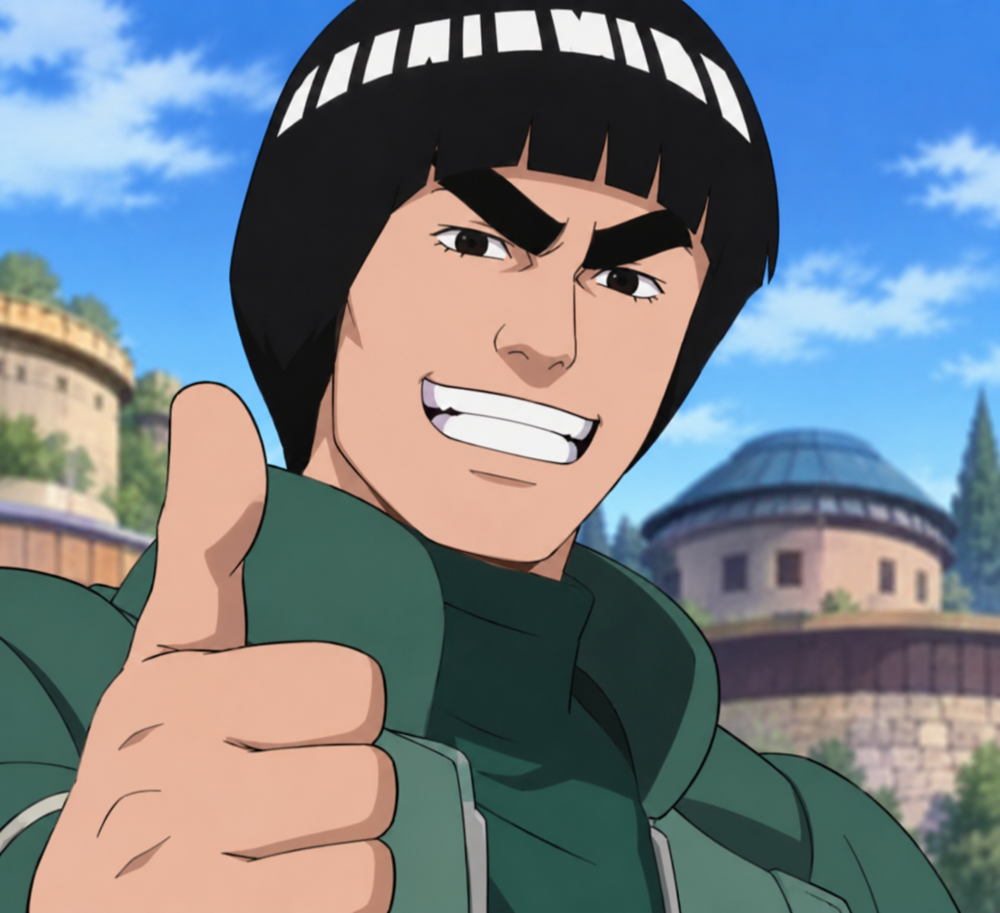
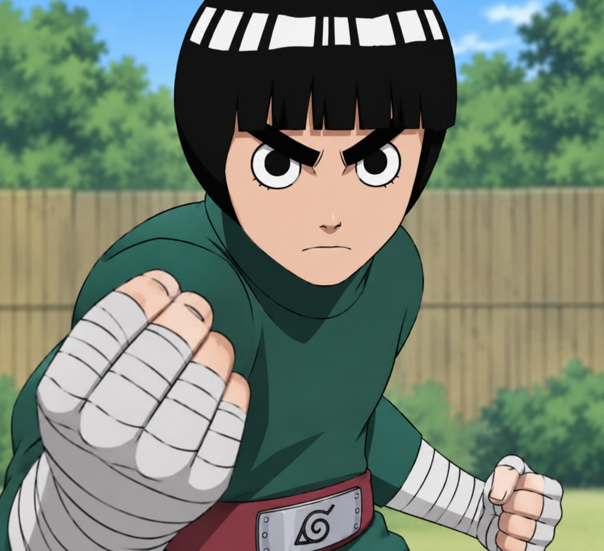
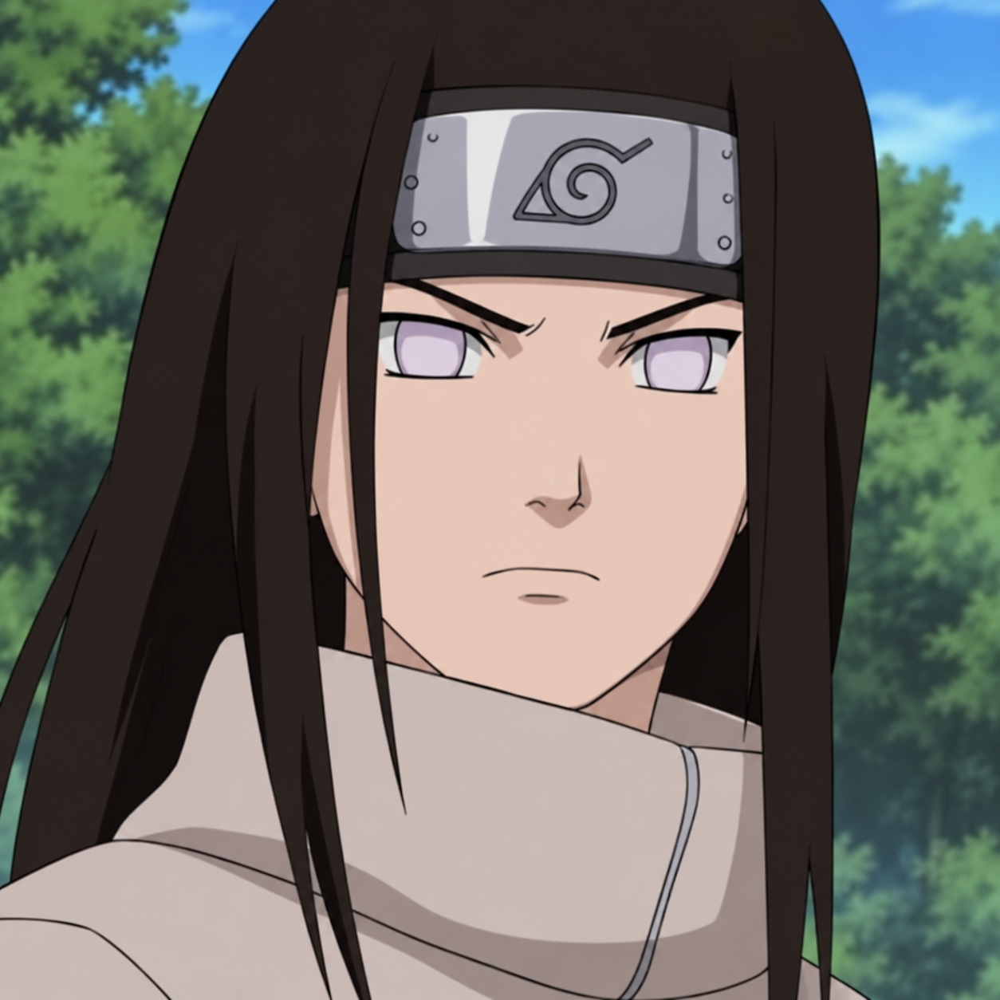

l'équipe 9 est composer de Rock Lee, Neji Hyûga et Tenten, et est sous la responsabilité de Gaï Maito.
Gaï est d’un aspect assez ridicule : tout vêtu de vert, il a des cheveux noirs et une coupe « au bol », sans oublier des sourcils sur-développés comparé aux autres personnages du manga. Ces sourcils, comme ceux de Lee, font que Naruto l'appelle souvent « Maître Gros Sourcils ».

Alors qu'il s'entraîne vainement au ninjutsu et se décourage, Gaï Maito, un jōnin de Konoha spécialiste du taijutsu (combat au corps à corps), lui explique que l'entraînement est la clé de la réussite, et l'encourage à poursuivre ses efforts. Le taijutsu utilisant le chakra sans le malaxer, il s’adapte parfaitement au cas de Lee.

Neji est né dans la branche parallèle du Clan Hyûga (bunke), l'une des familles nobles les plus importantes de Konoha ; pour cette raison, il est marqué du sceau maudit de l'oiseau en cage et est contraint de servir la branche principale du clan (sōke). Influencé par son père Hizashi, il éprouve pendant toute son enfance un lourd ressentiment envers la sōke qui refuse de reconnaître son potentiel, ressentiment qui se change en haine implacable lorsque Hizashi est sacrifié à la place de son frère jumeau Hiashi afin de sauvegarder la paix entre Konoha et Kumo.
